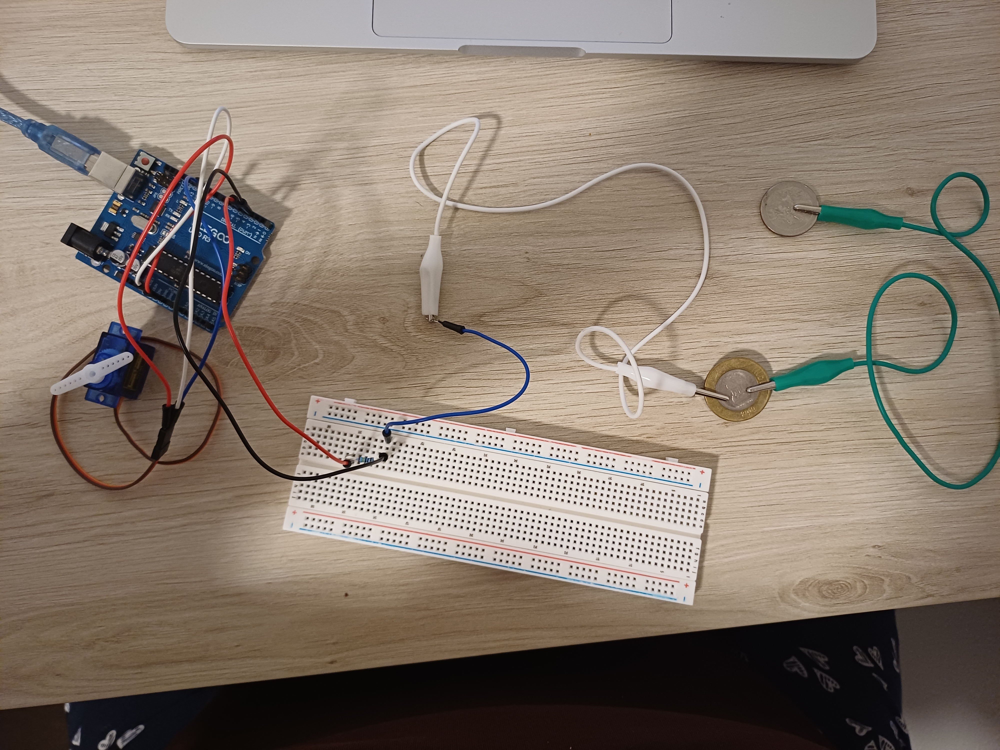
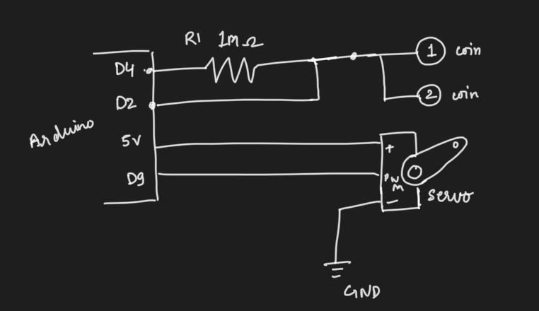

The MOSFET I am using is the IRLZ44N N-channel MOSFET. According to its datasheet, the absolute maximum continuous drain current (\(I_D\)) between pin 2 (Drain) and pin 3 (Source) is 47 A at a case temperature of 25°C.


// Pins used to control motor A
const int ENA = 9; // Controls motor A's speed
const int IN1 = 2; // Controls motor A's direction
const int IN2 = 3; // Works with IN1 to set the direction
// Pins used to control motor B
const int ENB = 10; // Controls motor B's speed
const int IN3 = 4; // Controls motor B's direction
const int IN4 = 5; // Works with IN3 to set the direction
v
void setup() {
// Set the motor control pins as outputs
pinMode(ENA, OUTPUT);
pinMode(IN1, OUTPUT);
pinMode(IN2, OUTPUT);
pinMode(ENB, OUTPUT);
pinMode(IN3, OUTPUT);
pinMode(IN4, OUTPUT);
}
// This function controls the direction and speed of both motors
void drive(int dirA, int dirB, int speed) {
// Set motor A to move forward or backward
digitalWrite(IN1, dirA > 0);
digitalWrite(IN2, dirA < 0);
// Do the same for motor B
digitalWrite(IN3, dirB > 0);
digitalWrite(IN4, dirB < 0);
// Set how fast each motor spins
analogWrite(ENA, speed);
analogWrite(ENB, speed);
}
void loop() {
// Move both motors forward for 2 seconds
drive(+1, +1, 200);
delay(2000);
// Move both motors backward for 2 seconds
drive(-1, -1, 200);
delay(2000);
// Move motor A forward and motor B backward
drive(+1, -1, 200);
delay(2000);
// Move motor A backward and motor B forward
drive(-1, +1, 200);
delay(2000);
// Stop both motors for 1 second before repeating
drive(0, 0, 0);
delay(1000);
}